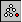
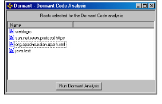

Performing a Dormant Analysis
1 Do one of the following:
• From the Projects tab, select projects that encompass the full scope of your application’s source code and header files.
• From the Results window, select root entities that refer (directly or indirectly) to the greatest number of lower-level application entities.
2 Do one of the following:
• Select Tools > Reengineer > Dormant.
• Click .
A Dormant Code Analysis window appears with the selected entities.

3 Click Run Dormant Analysis.
Dormant begins the analysis, indicating its progress in a dialog box. During the first phase, Dormant parses the selected entities and creates a temporary database.
If two or more entities have the same name, Dormant aliases them, and for the purposes of the analysis, considers them to be the same entity (more specifically, when two or more entities have the same name, Dormant considers a reference to any one of the entities to be a reference to all of them). This does not delete or rename entities in your source code.
If Dormant find entities with the same name, the Aliased Entities dialog box identifies the entities to be aliased.
4 Click OK.
During the second phase of the analysis, Dormant assesses the database created during the first phase. It identifies the relationships (if any) between the selected root entity and each entity in the database. The second phase takes considerably longer than the first phase
Once the Dormant analysis is complete, a dialog box appears prompting you to use the group manager to browse the results.
5 Click OK.
6 Click the Groups tab.
Dormant stores the results of its analysis in groups named dormant-code-auto-n, where n is a number that starts at 0 and increments with each dormant code analysis.
7 Select dormant-code-auto-0 (or the desired dormant subsystem if you have done more than one analysis).
The Results window displays every entity in the selected project that the root entities do not refer to, either directly or indirectly.